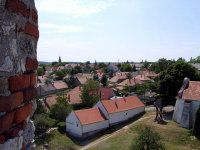
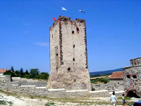
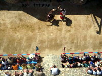
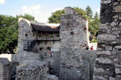
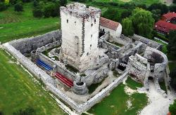
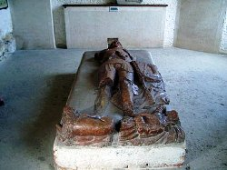
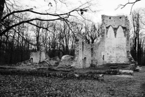
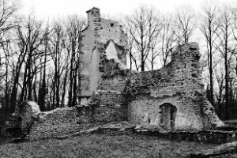
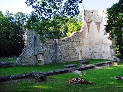
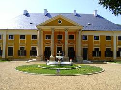

|
|
|
 |
Ritterburg
zu König Matthias Zeiten. - Heute eine Gemeinde mit rd. 1.800 Einwohnern
und Ruine einer mittelalterlichen Wehrburg.
Die Befestigung ist eine der schönsten Ritterburgen im
heutigen Ungarn. Sie entstand im 15. Jahrhundert.
Die Ruinen wurden weitgehend restauriert. |
 |
|
 |
Der
Wohnturm ist heute ein Museum in vier Stockwerken und zeigt, wie man
während der Renaissancezeit in einer Burg lebte.
Rittersaal und Damenzimmer, Baderaum und Kerker, je ein Stockwerk, dazu viele
Möbel, Waffen und Gebrauchsgegenstände sind alle
da.
Die
örtliche Reitschule veranstaltet
mittel-alterliche Reiterspiele in der Burgruine. |
 |
| |
Die
Gegend war bereits in der Römerzeit bewohnt. Die Ruine einer
weniger bekannten Siedlung von damals existiert auch heute noch am
Rande der Gemeinde Nemesleányfalu. Einst führte hier eine wichtige
Heeresstrasse der Römer vorbei.
Während der Landnahme der Ungarn siedelte hier das Volk der
mit den Ungarn verwandten "Váson". Das Areal gehörte einst
der Familie "Vezseny", so hieß auch die Ortschaft
Nagyvázsony früher. Als die Familie Vezseny ohne Nachwuchs
ausstarb, fiel die Gegend an das Königshaus. Kurz danach
erhob König Matthias den Grafen von Temes in den Ritterstand
und beauftragte ihn mit dem Schutz der Gegend.
|
|
Pál Kinizsi (1446-1494) war
ein kräftiger Müllergeselle. Im Heer des Renaissancekönigs
Matthias vielfach ausgezeichnet, erhob ihn der König in den
Adelsstand und wurde als Graf von Temes zum Standhalter von
Temesvár. Als Dank für einen großen Sieg im Kampf gegen die
Türken bei Kenyérmező/Erdély im
Jahre 1479 ernannte ihn der König Matthias zum Ritter von
Nagyvázsony, der hier daraufhin seine Burg erbaute. |
 |
Die
Heldentat von Pál Kinizsi:
Die von Fürst István Báthory (Großvater des
polnischen Königs gleichen Namens) geführte Truppe
schien in einer Schlacht bei Kenyérmező/Erdély
(Erdély ist größer als Siebenbürgen) im Jahre 1479 in
Schwierigkeiten zu geraten, als Kinizsis schwer gepanzerten
Reitersoldaten gerade noch rechtzeitig angekommen den
zahlenmäßig überlegenen Türken eine verheerende Niederlage
zufügten. In der Kapelle der
Wehrburg ist der rotmarmorne Sarkophag des Burgherrn Pál Kinizsi
zu sehen. |
 |
Das
folgende YouTube-Video zeigt eine Analyse der
Militärschlacht bei Kenyérmező/Erdély
im Jahre 1479, die zum Ruhm des Pál Kinizsi führte (auf
Ungarisch):
|
|
| |
| |
Während
der türkischen Besatzungszeit war Nemesleányfalu
menschenleer geworden, Maria Theresia siedelte einige
Deutsche hier an und manch andere folgten sie. Als die
Bewohner der deutschsprachigen Gemeinde nach dem 2.
Weltkrieg vertrieben wurden, verlor Nemesleányfalu ohne
nennenswerte Bevölkerung ihre Souveränität und wurde
im Jahre 1950 in Nagyvázsony eingemeindet.
|
|
 |
Der
Paulanerorden wurde im Jahre 1250 gegründet. Pál (=Paul)
Kinizsi ließ in den Jahren 1483-1485 in Barátipuszta,
in der Nähe seiner Ritterburg Kloster und
Kirche
im spätbarocken Stil für den Paulanerorden erbauen. Darin
sollte er begraben werden. |
 |
Die Klosteranlagen wurden von den
Türken im 16. Jahrhundert weitgehend zerstört und im Jahre
1663 sogar angezündet. Heute existieren nur noch die Ruinen.
"Barátipuszta"
ist eine häufige Bezeichnung von Einzelhäusern in der
Pusztalandschaft vielerorts im westlichen Ungarn, daher
Vorsicht bei der Suche! Diese Klosterruine in Barátipuszta
befindet sich ca. 12 km entfernt von Nagyvázsony. |
 |
Die Burg von Nagyvázsony samt großer Ländereien fiel im
18. Jahrhundert
in die Hände der Familie Zichy. Die Politikerfamilie erbaute
sich einen Palast, der heute als Schloss Zichy bezeichnet und als Hotel betrieben
wird.
Adresse: Kossuth
L. u. 12 |
 |
|
| |
|
Ungarn-Tourist Team

|
| |
| |
|